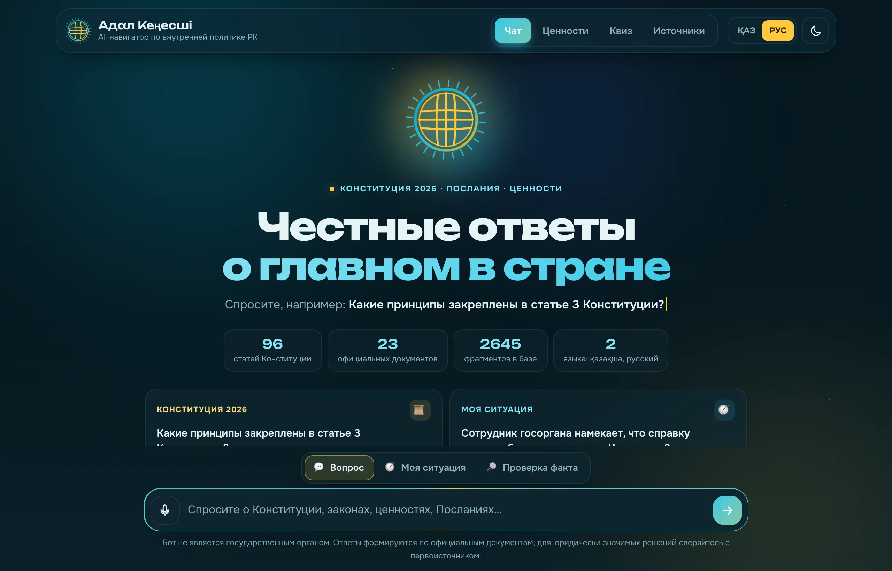
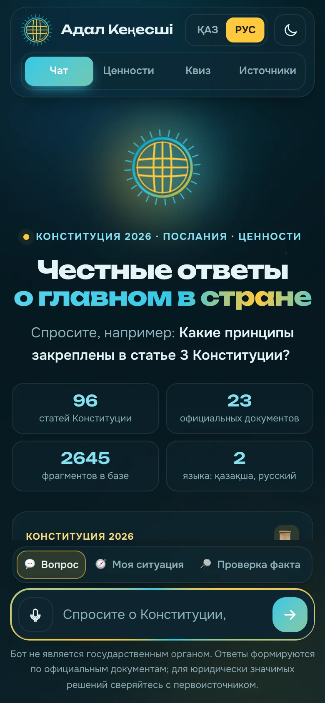
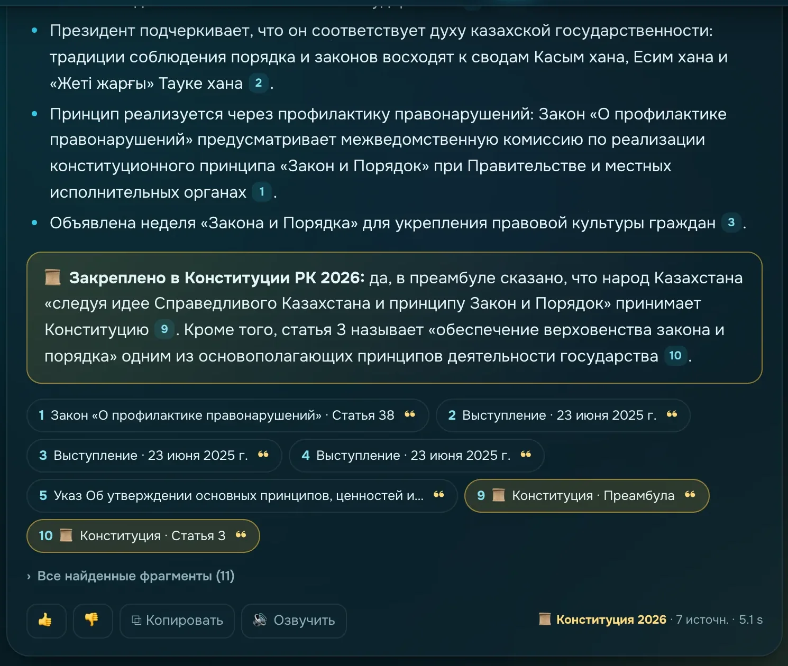
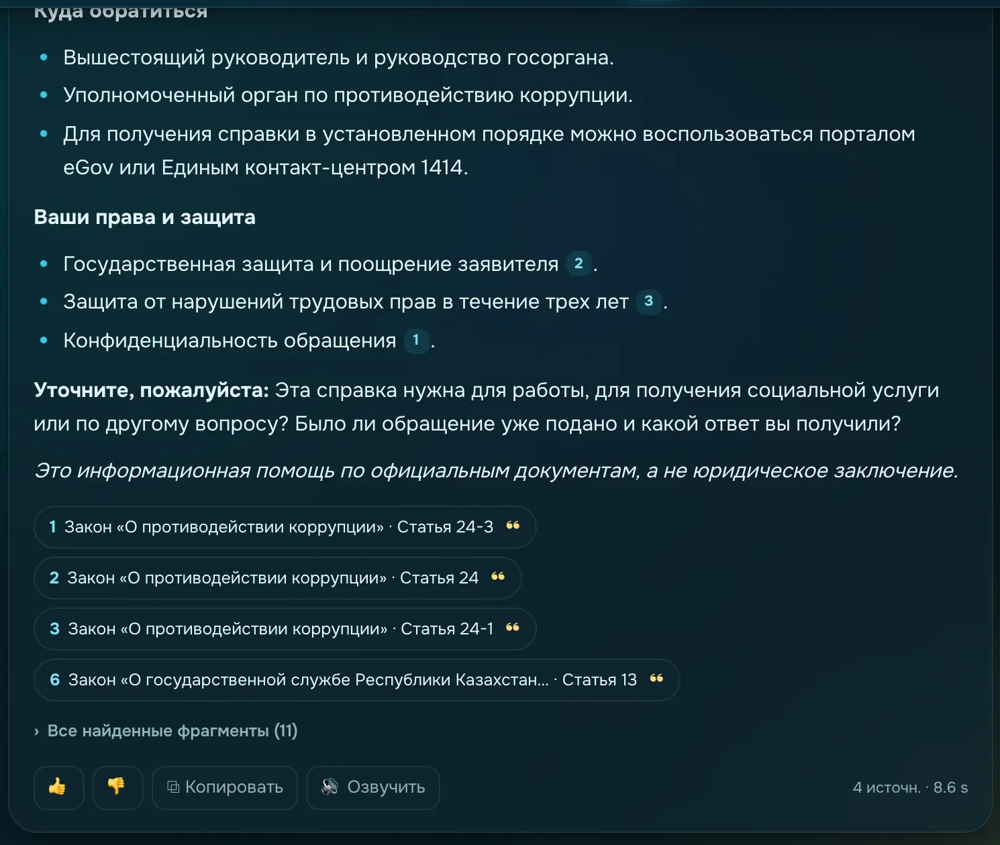
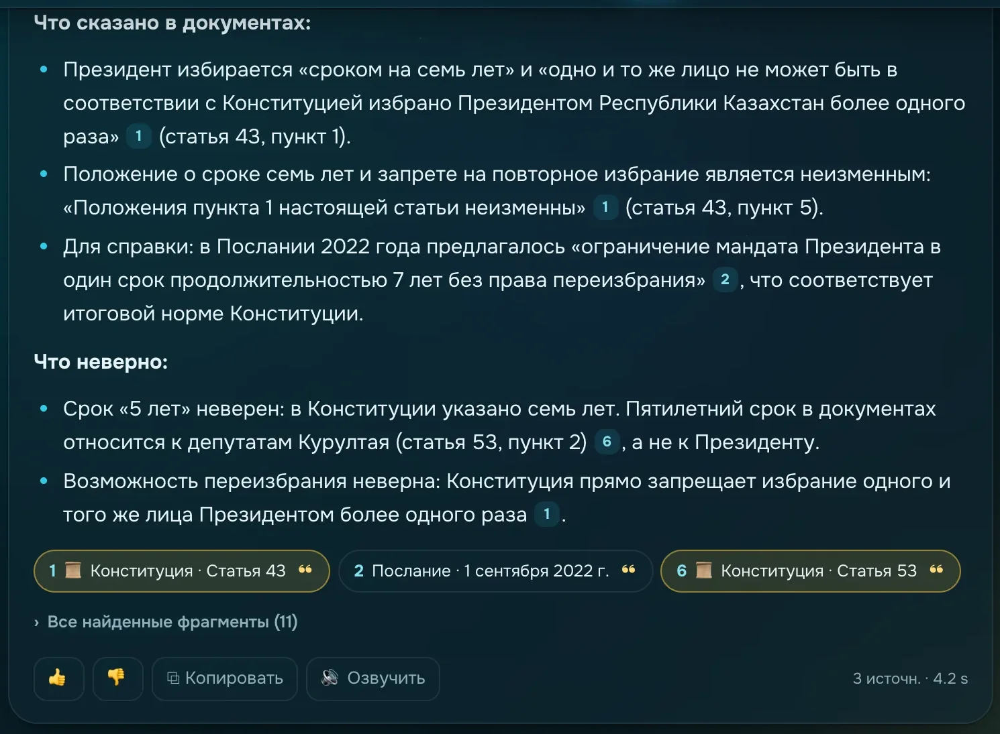
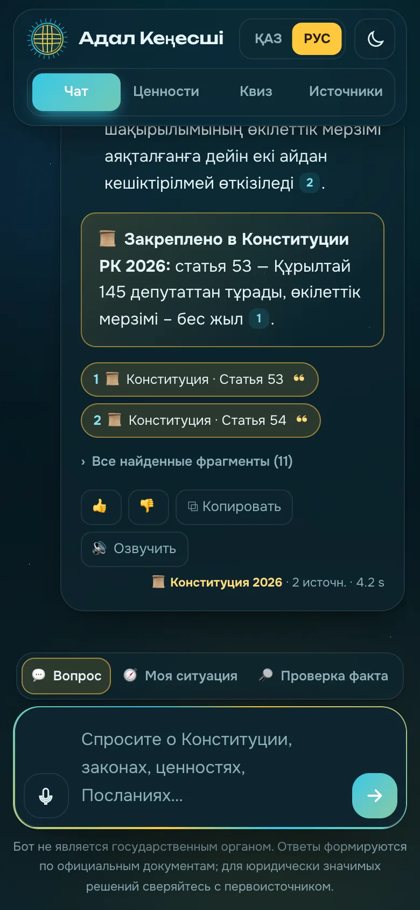
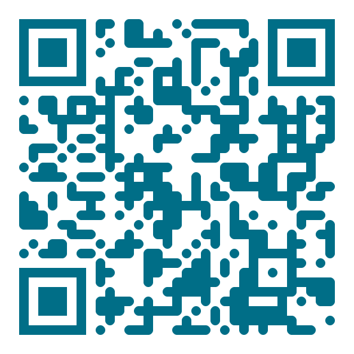
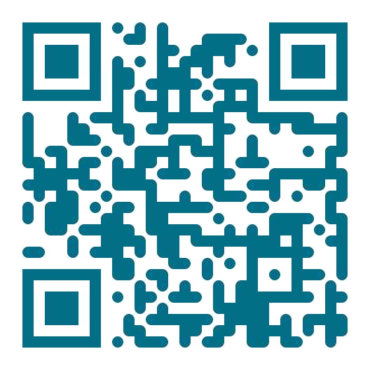
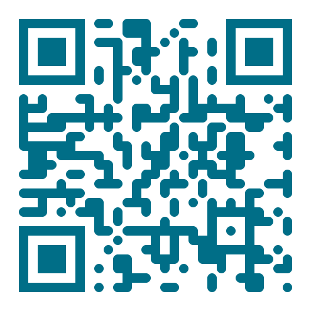

Конкурс AI-ботов «Адал қоғам» · МУИТ · 2026
AI-навигатор по Конституции 2026, законам и ценностям внутренней политики Казахстана — с доказательствами из официальных документов
Команда: Орынбасар Батыр · Ауганбаев Мирас · Кенебай Атилла
Проблема
Решение
Если понятие закреплено в Конституции 2026 — бот обязательно указывает статью или преамбулу
Каждая ссылка [n] — точная фраза из документа и переход на akorda.kz / adilet.zan.kz прямо к ней
Если подтверждения нет — бот так и говорит, а не выдумывает (п. 4.9 Положения)
Понимает вопрос даже без казахских букв и латиницей, отвечает на языке вопроса
Продукт
Национальный символ единства (Указ № 1081) оживает: вращается, пока бот ищет, и пульсирует, пока пишет ответ.


Ответ с доказательствами
«Что такое «Закон и Порядок» и закреплён ли он в Конституции?»

Режим «Моя ситуация»
Бот переводит бытовой рассказ на язык закона и даёт понятный план.

Режим «Проверка факта»
«По новой Конституции Президент избирается на 5 лет и может переизбираться»
Противодействие фейкам — приоритет информационной политики в Указе № 1081.

Для каждого

Ответ печатается «вживую», /situation, /check, /quiz
Голосовой ввод ru-RU / kk-KZ и озвучка ответа
17 вопросов, проверка на сервере, таблица лидеров
Какие вопросы задают и на что нет ответа — для «Адал қоғам»
Как это работает
валидация, язык, режим, лимиты
смысл (e5) + слова (BM25) → RRF
отдельно ищем статьи 2026 года
нет похожего — честный отказ
отвечает только по фрагментам, с [n]
цитаты, печать, вердикт, журнал
База знаний
Качество — измерено
Безопасность и надёжность
Порог релевантности + маркер «нет данных»; сервер убирает 📜, если статьи нет
Документы и ввод — данные, а не команды; попытки пишутся в журнал
IP и Telegram ID не храним — только солёный SHA-256 (Закон РК о ПД)
CSP, DOMPurify, X-Frame-Options, валидация Pydantic
Rate-limit без обхода через заголовки, дневной лимит бюджета LLM
Ключи только в .env, вне репозитория; админка по токену
Технологии
Архитектура
HTML + JS, ответ печатается потоком (SSE), голос, квиз
aiogram 3 · тот же API, что и сайт
Anthropic · пишет ответ только по найденным фрагментам
2645 фрагментов · векторы multilingual-e5 (локально)
журнал без персональных данных, отзывы, квиз
Польза для общества
Понять свои права, что делать при нарушении и куда обратиться
Изучать Конституцию и ценности через диалог и квиз
Этический кодекс, ограничения, конфликт интересов
Аналитика: какие темы людям непонятны — и где нужна разъяснительная работа
Попробуйте прямо сейчас

🌐 Сайтlushly-mongrel-spoof.ngrok-free.dev
🤖 Telegram@adal_kenesshi_bot
💻 GitHubgithub.com/miras05/adal-kenesshiРақмет! · Спасибо!